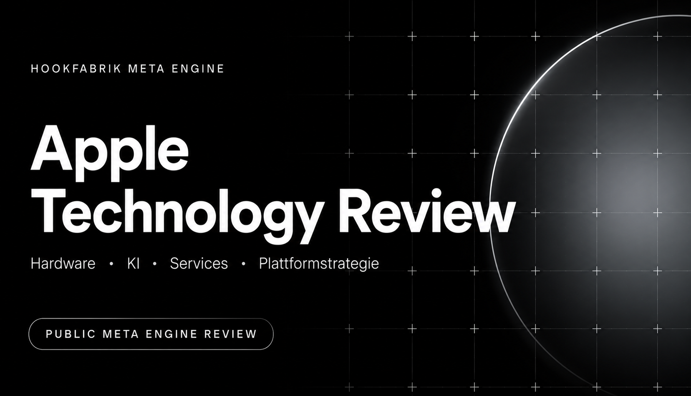

Apple: Innovationsführer – oder Meister der technologischen Integration?
Eine öffentliche Meta-Engine-Session zur Frage, ob Apples technologische Führungsposition aus eigenen Durchbrüchen entsteht oder zunehmend aus der Fähigkeit, Chips, Betriebssysteme, Geräte, Services und Datenschutz zu einem überlegenen Gesamtsystem zu verbinden.
Was die Meta Engine hier leisten sollte
Die eigentliche Frage lautet nicht: „Erfindet Apple genug?“ Sondern: „Kontrolliert Apple auch im KI-Zeitalter die entscheidende Technologieschicht zwischen Nutzer, Gerät, Daten und Handlung?“
Methodik und Evidenzlogik
Fakt durch offizielle Technologie- und Entwicklerquellen belegt.
Schlussfolgerung aus Architektur, Produktstrategie und Wettbewerbsposition abgeleitet.
Annahme Zukunftshypothese, deren Eintritt nicht gesichert ist.
Executive Summary
Strategische Diagnose
Apple führt dort, wo Hard- und Software extrem eng gekoppelt werden müssen: energieeffiziente Chips, Betriebssysteme, Sensorik, Sicherheitsarchitektur, Gerätewechselwirkungen und kontrollierte Nutzererlebnisse. Bei generativer KI, skalierbarer Cloud-Infrastruktur und offenen Agenten-Ökosystemen haben OpenAI, Google, Microsoft und NVIDIA einen Vorsprung.
Das eigentliche Risiko
Apples Ökosystem ist ein Wettbewerbsvorteil, solange das Betriebssystem die primäre Orchestrierungsebene bleibt. Werden KI-Agenten zur dominanten Schnittstelle, kann sich Wertschöpfung oberhalb von iOS und macOS verlagern. Dann droht Apple zum hervorragend integrierten Hardware- und Distributionskanal für fremde Intelligenz zu werden.
1. Aktueller technologischer Stand
Zwischenurteil: Apple ist heute kein universeller Technologieführer. Es ist der weltweit stärkste Integrator persönlicher Computertechnologie.
2. Technologische Entwicklungen der kommenden Jahre
3. Apples Innovationsstrategie
Chips, Betriebssysteme, Sicherheitsarchitektur, Geräteframeworks, Sensorfusion und Benutzeroberflächen bleiben Kernkompetenzen.
Displays, Funkstandards, Cloudmodelle und externe KI können zugekauft oder partnerschaftlich eingebunden werden, solange Apple die Nutzererfahrung kontrolliert.
Diese Disziplin schützt Qualität und Marge. Im KI-Zeitalter kann zu spätes Handeln jedoch Plattformkontrolle kosten, weil Entwickler und Nutzer Gewohnheiten außerhalb des Apple-Stacks aufbauen.
Wo Integration stärker ist als Durchbruch
- Smartphones, Uhren und Kopfhörer: selten jede Basistechnologie zuerst, aber oft die stärkste Gesamtumsetzung.
- Services: hohe Integration, begrenzte technologische Eigenständigkeit.
- KI: differenzierte Datenschutz- und Systemarchitektur, aber Abhängigkeit von externen Frontier-Modellen.
Neue Chance
Apple kann KI zur unsichtbaren Systemfunktion machen: persönlich, lokal, multimodal und über Geräte hinweg. Damit würde das Unternehmen nicht den größten Chatbot bauen, sondern das intelligenteste persönliche Betriebssystem.
4. Vergleich mit führenden Technologieunternehmen
| Unternehmen | Technologische Stärke | Strategischer Ansatz | Apple-Risiko |
|---|---|---|---|
| OpenAI | Frontier-Modelle, Agenten, schnelle Produktiteration | Intelligenz als horizontale Plattform | KI wird zur primären Nutzeroberfläche oberhalb des Betriebssystems. |
| Modelle, Suche, Cloud, Android, Daten, Chips | KI durch alle Plattformschichten integrieren | Google kombiniert Modell- und Distributionsmacht stärker als Apple. | |
| Microsoft | Enterprise-Distribution, Cloud, Agenten-Governance, Developer Tools | KI direkt in Arbeitsprozesse und Unternehmensdaten einbetten | Apple bleibt im Unternehmenskontext gegenüber Windows, Azure und Microsoft 365 sekundär. |
| NVIDIA | AI Compute, Software-Stack, Simulation, Robotik | Infrastruktur jeder KI- und Physical-AI-Plattform kontrollieren | Apple besitzt starke Edge-Chips, aber keine vergleichbare externe Compute-Plattform. |
| Meta | Open Models, soziale Graphen, AI Glasses, massive Consumer-Reichweite | Offenes KI-Ökosystem plus neue Wearable-Schnittstellen | Meta könnte bei leichten KI-Brillen schneller eine Massenplattform etablieren. |
| Apple | Chips, Geräte, OS, Privacy, Integration, Premiumdistribution | Technologie kontrolliert in persönliche Alltagsprodukte übersetzen | Stärke wird zur Schwäche, falls Offenheit und Modelltempo wichtiger werden als Integration. |
5. Technologieszenarien 2026–2036
Effiziente Modelle laufen lokal, persönliche Daten bleiben privat, Wearables liefern Kontext.
Wirkung: Sehr positiv für Apple.
Wenige extrem leistungsfähige Agenten steuern Apps, Arbeit und Kommunikation plattformübergreifend.
Wirkung: Hohes Disintermediationsrisiko.
Leichte KI-Brillen übernehmen Kamera, Audio, Navigation und kontextuelle Assistenz.
Wirkung: Große Chance, aber Meta besitzt frühen Marktzugang.
Regulierung und Vertrauen begrenzen zentralisierte Datennutzung.
Wirkung: Apples Architektur wird zum Standardvorteil.
Nutzer delegieren Ziele an Agenten; klassische App-Navigation wird sekundär.
Wirkung: App-Store- und OS-Kontrolle verlieren Wert.
Robotik und autonome Systeme werden neue Compute-Plattformen.
Wirkung: Apple besitzt Komponenten, aber noch keine klare Plattformstrategie.
6. Langfristige Innovationsfähigkeit
Warum Apple führend bleiben kann
- Kontrolle über Chips, Betriebssysteme, Geräte und Distribution.
- Milliarden aktiver Geräte als unmittelbare AI-Deployment-Basis.
- Starke Fähigkeit, komplexe Technologien massenmarkttauglich zu machen.
- Vertrauensvorteil bei persönlichen Daten und sicherer On-Device-Verarbeitung.
- Wearables und Health als Zugang zu einzigartigem persönlichem Kontext.
Welche Entscheidungen entscheidend werden
- Siri und Apple Intelligence zur echten Agentenplattform machen – nicht nur zu einer Feature-Schicht.
- Entwicklern sichere Systemaktionen und Modellzugänge öffnen, damit Innovation innerhalb des Apple-Ökosystems statt außerhalb entsteht.
- Cloud-AI-Kapazität strategisch absichern, ohne den Datenschutzvorteil aufzugeben.
- Leichtere räumliche Hardware entwickeln, bevor konkurrierende Brillen die nächste Schnittstelle besetzen.
- Physical AI und Robotik als Plattformoption aufbauen, nicht nur als internes Forschungsfeld.
- Modellpartnerschaften austauschbar halten, damit Apple nicht von einem einzelnen KI-Lieferanten abhängig wird.
7. Technologieurteil
Das Unternehmen führt bei integrierter persönlicher Technologie, nicht bei jeder Basistechnologie. Sein Erfolg basiert zunehmend auf dem Ökosystem, doch dieses Ökosystem ist selbst das Ergebnis tiefgreifender technischer Kompetenzen in Chips, Sicherheit, Betriebssystemen und Gerätekoordination.
Wo Apple langfristig einen Vorteil besitzt
- Apple Silicon und energieeffizientes On-Device Computing
- Privacy-by-Architecture und sichere persönliche Datenverarbeitung
- Integration über Geräte, Sensoren, Betriebssysteme und Services
- Produktisierung komplexer Technologien für den Massenmarkt
- Distribution neuer Funktionen auf einer großen installierten Basis
Wo Apple aufholen muss
- Frontier-Modelle und agentische Fähigkeiten
- Cloud-Infrastruktur und Skalierung großer KI-Systeme
- Offenere Entwicklerplattform für Modelle, Agenten und Systemaktionen
- Marktreife, leichte räumliche Hardware
- Strategische Position bei Robotik und Physical AI
Meta-Engine-Synthese: Apples Zukunft hängt nicht davon ab, jedes Modell selbst zu bauen. Sie hängt davon ab, ob Apple fremde und eigene Intelligenz so orchestriert, dass Nutzer weiterhin Apple – und nicht den Modellanbieter – als primäre Technologieplattform erleben.
Quellen
- Apple Intelligence Architektur 2026
- Apple Siri AI 2026
- Apple Intelligence und Private Cloud Compute
- Apple visionOS Developer Platform
- Google Gemini Intelligence auf Android
- Microsoft Agent Platform
- NVIDIA Vera Rubin AI Platform
- NVIDIA Robotics Platform
- Meta AI Glasses 2026
- OpenAI: Agentische Arbeitssysteme
Quellenkritik: Die meisten Primärquellen stammen von den Unternehmen selbst. Sie belegen Architektur, Produkte und strategische Richtung, nicht automatisch unabhängige Leistungsführerschaft.
Annahmen und Grenzen
- Interne Modellleistung, Trainingskosten, Roadmaps und Hardwareprojekte sind nicht vollständig öffentlich.
- Technologieführung wird als Kombination aus technischer Tiefe, Plattformkontrolle, Produktwirkung und Zukunftsfähigkeit bewertet.
- Der Review trennt Modellführerschaft bewusst von System- und Integrationsführerschaft.
- Die Entwicklung von Agenten, Brillen und Robotik ist hochgradig unsicher.
- Partnerschaften mit externen Modellanbietern werden als strategischer Bestandteil, nicht automatisch als Schwäche bewertet.
Kontakt & Kundenanfragen
Sie möchten eine vergleichbare Technologieanalyse für Ihr Unternehmen, Ihren Markt oder eine konkrete strategische Weichenstellung?
Senden Sie eine kurze Anfrage per E-Mail oder kontaktieren Sie Hookfabrik über LinkedIn.
Weitere Meta Engine Reviews
Weitere öffentliche Analysen aus der Meta Engine Review Bibliothek.